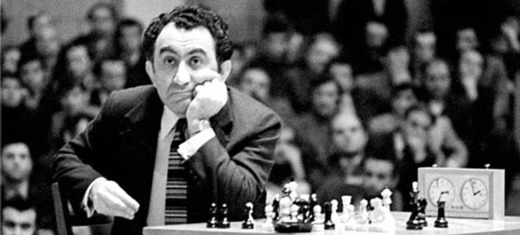
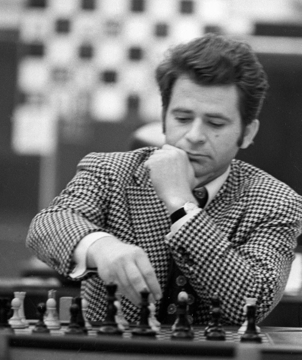

Ошибки плохи для игры, но они неизбежны. Игра без ошибок - бесцветна
Задумав снять фильм о всех шахматных королях - от Стейница до Каспарова,
журналист Виталий Мелик обратился к Талю, чтобы договориться с ним об интервью:
- А со Стейницем вы
уже договорились? - спросил шахматный король
Известный гроссмейстер обратился к Талю:
— Миша, сегодня я выступаю по телевидению. Что мне сказать зрителям?
— Дайте им ценный совет: пусть слушают радио, завтра там выступаю я!
На турнире претендентов в Кюрасао у Таля начались почечные колики и он угодил в больницу. А как только полегчало,
поспешил выписаться. Ему предложили немного задержаться для детального обследования. Но Таль категорически
отказался. Главный врач больницы, милый человек, сказал ему перед выпиской:
— У вас там так страшно, арестовывают и отправляют в Сибирь. Оставьте хоть свою жену Салли здесь,
она мне очень нравится.
— Она вам нравится здесь, — возразил Михаил, — а я, если придется, буду любить ее и в Сибири.
В шахматах все держится на тактике. Если стратегия - это глыба мрамора, то тактика - это резец, которым действует мастер, создавая произведение исскуства
Юная Рона, будущая жена Петросяна, в пятидесятые годы увлекалась шахматами. А поскольку она была хорошенькая, за ней
ухаживали многие гроссмейстеры, в том числе Тигран Петросяк и Ефим Геллер. В 1952-м в Швеции состоялся межзональный
турнир, в который они попали оба — и Петросян, и Геллер. Незадолго до его начала девушку спросили, кому из них она
отдает предпочтение как потенциальному жениху. Ответ Роны навсегда вошел в историю:
— Межзональный покажет!
В Стокгольме Петросян обогнал Геллера на полочка и тем самым решил судьбу Роны и свою собственную судьбу тоже. А окончательно в правильности своего выбора Рона Яковлевна убедилась одиннадцать лет спустя, когда Петросян обыграл Ботвинника и взошел на престол... (История с межзональным, рассказанная автору одним гроссмейстером, приятелем Петросяна, довольно смешная, но оказалось, что это всего лишь байка. Вскоре после ее публикации в «МК» мне позвонила Рона Яковлевна и сообщила, что создать семью с Тиграном они успели еще до начала турнира).
После свадьбы Петросян с Роной жили в маленькой двухкомнатной квартире. Будущий чемпион мира был членом общества
«Спартак» (и, кстати, преданным болельщиком футбольного и хоккейного «Спартака»), и тут ему предложили перейти в
ЦСКА, пообещав улучшить условия. В те времена шахматы пользовались большой популярностью среди маршалов и генералов,
и Петросяну предоставляли сразу четырехкомнатную квартиру.
— О чем тут думать, конечно, соглашайся! — воскликнула Рона. — Представляешь, у тебя будет отдельный кабинет.
Фантастика!
Но Петросян весьма скептически отнесся к этому предложению.
— Сегодня я ради лучшей квартиры перейду из «Спартака» в ЦСКА, — сказал он, — а завтра встречу лучшую жену и перейду
от тебя к ней. Как ты на это посмотришь?
После этих слов Рона Яковлевна больше не настаивала на переходе мужа в другое спортивное общество, и сама занялась обменом квартиры.
Петросян сыграл четыре претендентских матча с Корчным: первый выиграл, а три следующих проиграл. Таким образом, Корчной был трудным соперником для девятого чемпиона мира. И однажды Игорь Зайцев, помогавший Петросяну, стал свидетелем того, как рассеялся миф о «железном Тигране». Когда после очередного межзонального Петросяну сообщили по телефону результаты жеребьевки претендентских матчей и он узнал, что в первом же круге опять столкнется с Корчным, у него от досады навернулись слезы. Да, в этот момент невозмутимый Петросян не сумел сдержать свои эмоции.
Чтобы стать чемпионом мира, нужно быть немножко варваром
Борис Спасский стал международным мастером в шестнадцать лет, для того времени — а это произошло в самом начале 1953-го — это был безусловный рекорд. «Спасибо советской власти!» — позднее объяснил он свое достижение. А дело в том, что на старте турнира в Бухаресте советские участники беспощадно молотили друг друга, и неожиданно вперед вышел венгр Ласло Сабо. И тут из Москвы поступила телеграмма-молния от властей: «Перестаньте безобразничать, начинайте делать между собой ничьи!» К этому моменту Спасский уже успел обыграть Смыслова, но ему предстояли встречи с Болеславским и Петросяном, и неопытный Борис волновался, что не устоит в партиях с ними. Но, получив телеграмму, все подчинились кремлевскому приказу, и задача предельно упростилась.
Наставником Спасского в течение нескольких лет был гроссмейстер Толуш. Однажды, возвращаясь вместе с Сало Флором в дом отдыха в Серебряном бору, он опоздал к отбою и решил перелезть через забор. К своему несчастью, Толуш упал и сломал ногу (Флор, как человек осторожный — и за шахматной доской, и в жизни, — нашел дырку в заборе и «спасся»). Александр Казимирович очень сожалел, что из-за травмы не сумел поехать со Спасским на студенческое первенство мира и стать свидетелем произошедшего там ЧП. А дело в том, что при подготовке к очередному туру его ученик неожиданно задал руководителю делегации каверзный вопрос о характере заболевания В. И. Ленина. Вопрос буквально поверг представителя компетентных органов в шок, и Толуш сокрушался, что пропустил эту эффектную сцену.
В Амстердаме решался вопрос, где проводить матч Спасский — Фишер. Тогдашний президент ФИДЕ Макс Эйве пригласил к себе представителей обоих гроссмейстеров. Интересы чемпиона мира должен был защищать начальник отдела шахмат Спорткомитета СССР Виктор Батуринский. Но Спасский этого не хотел и поэтому пошел на хитрость: обратился к Батуринскому с просьбой заверить ему в Центральном шахматном клубе доверенность на вождение машины. Батуринский отказался, объяснив Спасскому, что это делается только в нотариальной конторе (Борис Васильевич прекрасно об этом знал!). А за два дня до отъезда на совещании в Спорткомитете чемпион мира заявил: «Виктор Давыдович отказал мне в доверенности на машину, и поэтому я не доверяю ему быть моим представителем в Амстердаме». Руководство долго смеялось, но Спасский своего добился: Батуринский остался дома.
| Формула | Систематическое название | Тривиальное название |
|---|---|---|
| NaCl | Хлорид натрия | Тривиальное название |
| Na2CO3 | Карбонат натрия | Сода, кальцинированная сода |
| NaHCO3 | Гидрокарбонат натрия | Питьевая сода |
| CaO | Оксид кальция | Негашеная известь |
| Ca(OH)3 | Гидроксид кальция | Гашеная известь |
| CO2 | Диоксид углерода | Углекислый газ, углекислота |
Хороший сайт для тех, кто хочет поиграть шахматы